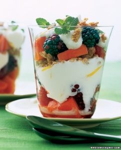

Papaya-Berry Yogurt Parfait

For the most visually rewarding presentation, layer this parfait in a clear glass. Makes 6 servings (164 calories each).
Ingredients
• 3 containers (5.3 ounces each) plain nonfat Greek yogurt
• 5 tablespoons honey
• 1 1/2 teaspoons grated lemon zest, plus 1 tablespoon juice
• 1 piece fresh ginger (about 2 inches)
• 1 papaya (1 pound), peeled, halved lengthwise, seeds discarded, cut into 1/2-inch cubes
• 1 package (6 ounces) fresh blackberries
• 1 package (6 ounces) fresh raspberries
• 1/4 cup chopped fresh mint, plus sprigs for garnish
• 1/2 cup granola
Directions
1. In a small bowl combine yogurt, 3 tablespoons honey, and zest; set aside.
2. Using the large holes of a box grater, grate the ginger (no need to peel) into a small bowl. Squeeze ginger through a fine-meshed sieve or strainer placed over a medium bowl to get a total of 1 tablespoon ginger juice. Discard pulp.